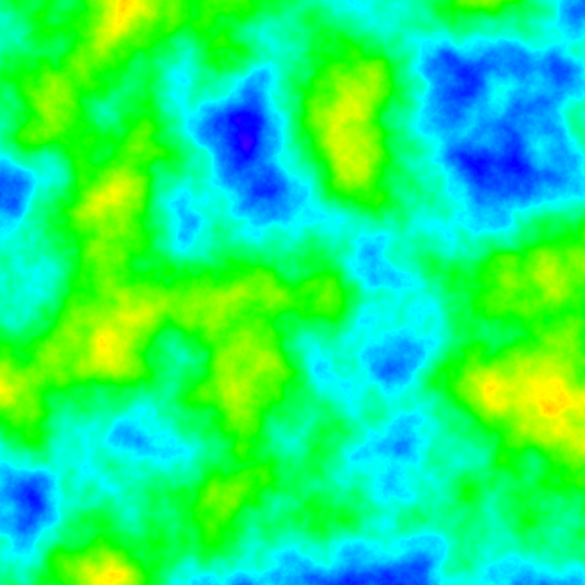

Different types of world generation
Continuous Random Noise Map
If we can make a continuous noise map, then we can generate a map based on those values. For example, we can build a simple infinite dungeon by generating a path anywhere, where the value is in the range (0.3, 0.7) or (0.4, 0.6).


You can also different layers to represent e.g. height (0.01), humidity (0.02) and temperature (0.04).


By having different scales, we get a dynamic interaction, and slow but consistent change in biomes. Overlaying these we get:
File: noise_layer.py – Commit: 69a6bdf of ILL-Release.
System Random Noise
TODO: Describe why we are not using system random noise
Perlin Noise
TODO: Describe why we are not using Perlin noise
Simplex Noise
TODO: Describe why we are not using simplex noise
OpenSimplex Noise
TODO: Describe why we are using OpenSimplex noise
Chunk loading
Whenever we get close to a new chunk, we check whether we have generated it already, by checking if the file <prefix>_<x>_<y>.ill exists.
If it does not, then we run the generation script for that given chunk based on our current distance to the chunk.
Given that we want to load r chunks around us, and the generation has n levels then we must load everything at distance d to level
(r+n) − d
with a maximum of n and a minimum of 0.
This ensures that we are not loading too much at a time, and allows us to make very consistent world gen across chunk boundaries,
as any level can depend on all previous levels within a radius of a chunk.
This method also allows us to make road networks and other global structure, if we have a high enough level of generation.
Infinite world generation
Infinite worlds builds on the mechaninc described in the chunk loading and noise maps. This allows us to generate a continuous random looking world, but with consistent global structures. We could even generate full questlines this way, without it looking weird or being inconsistent, but this would require us loading alot of chunks.
We could instead generate predefined points of interest, and then whenever we load one, we just need to connect to the surounding ones. This can be done by running Astar, loading any chunk we need to walk through to a low level. That is we can do this process recursively in different scales, not just around the player, but also for global structure.
Dungeon generation
We start by generating random points, then make a minimum spanning tree (allowing wrapping). We can then normalize the map, so there is no wrapping.
We can do as we did with the noise maps.